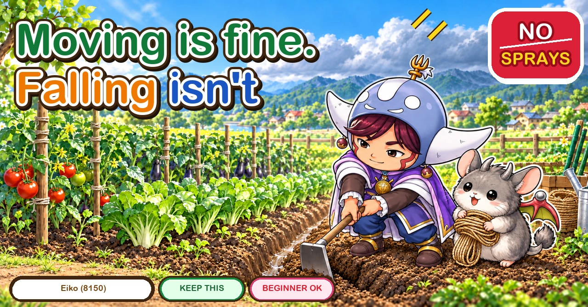
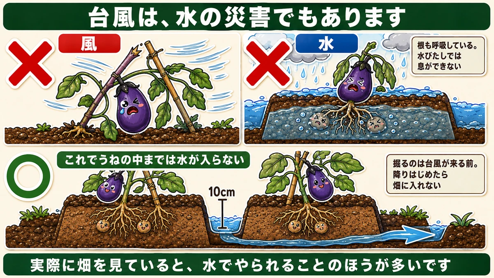
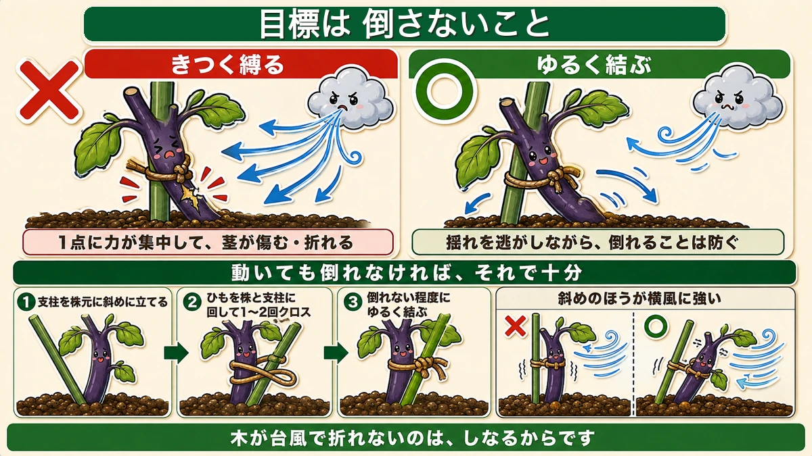
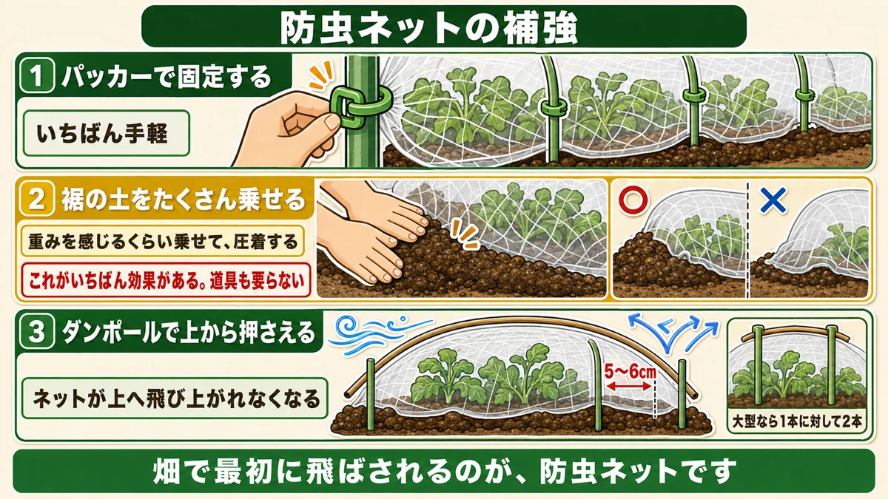
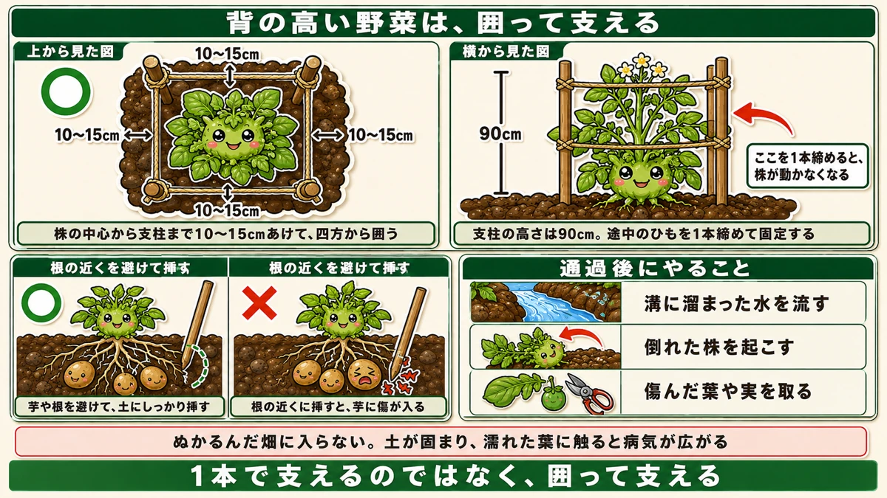

Even in a storm, don't tie it tight 🌀 Moving is fine; falling isn't

🗨️ "There's a storm coming and I don't know what to do."
🗨️ "I fixed everything down firmly and the plants were damaged anyway."
🗨️ "I stopped the wind and lost everything to water."
Hello, I'm Eiko. Eight years of growing vegetables organically and without pesticides, and a teaching licence in science.
Once a storm arrives there is nothing you can do. Everything is what you did the day before.
Two things up front:
One. Even in a storm, don't tie things tight.
Two. A storm is a water event as much as a wind event ☺️
It's a water event too

What this diagram says （図解の文字）
- A storm is a water event as well
- × wind ／ × water
- Roots breathe. They can't in waterlogged soil
- ○ this keeps water out of the bed itself — 10 cm
- Dig it before the storm. Once the rain starts you can't get onto the plot
- Watching an actual garden, more is lost to water than to wind
"Storm" means wind first — blown over, snapped, carried away.
But watching an actual garden, more is lost to water.
- water soaks into the bed itself
- roots can't breathe underwater
- and root rot starts from there
Dig a 10 cm channel between the beds
So this is the first job: dig a channel about 10 cm (4 in) deep between the beds.
That alone keeps the water out of the beds.
It's the emergency version of the drainage channel and raised beds you'd build for a long wet spell.
Don't tie it tight

What this diagram says （図解の文字）
- The goal is "doesn't fall", not "doesn't move"
- × tied tight — force concentrates at one point and the stem is damaged or snaps
- ○ tied loosely — it absorbs the movement while still preventing a fall
- ① set the cane at an angle at the base ② pass the string round plant and cane, crossing once or twice ③ tie loosely, just enough not to fall
- An angled cane resists side wind better
With a storm forecast, the instinct is to fix everything down hard. I did that at first — strings pulled as tight as they'd go.
It was wrong.
Same rule as tying in
Loose on the plant, tight on the cane. Exactly the same in a storm.
Moving is fine. Falling isn't
- Tied tight → when the wind shakes it, all the force lands on that one point, and the stem bruises or breaks
- Tied loosely → the movement is absorbed, and it still doesn't fall
If it moves and doesn't fall, that's a success.
A tree survives a gale because it bends. Rigid things break.
How to tie it
- Set a cane at an angle at the base of the plant
- Pass the string round both plant and cane, crossing it once or twice
- Tie it loosely — just enough that it can't fall
The angle matters: a leaning cane resists side wind better than a vertical one. Same thinking as an A-frame.
Reinforcing netting, in three stages

What this diagram says （図解の文字）
- Reinforcing insect netting
- ① clips onto the hoops — the easiest
- ② pile soil on the hem — enough that you feel the weight, pressed down — this is the most effective, and needs no equipment
- ③ press from above with extra hoops — the netting can't lift ／ 5–6 cm ／ two per hoop for a big storm
- Netting is the first thing in a garden to blow away
Netting is the first thing to go. Ordinary wind won't shift it; a storm is another matter.
① Clips
Clips that hold the netting onto the hoops. Any garden centre has them. The easiest option.
② Pile soil on the hem
And this is the one that works.
Normally you lay a little soil on the hem to close the gap, and that's enough for insects.
For a storm, pile on enough soil that you can feel the weight of it, then press down to bed it in.
Nothing lifts it after that. The grower I took this from called it the single most effective step — and it needs no equipment at all. It's just soil.
③ Press it down with extra hoops
If you want more: push extra hoops in 5–6 cm away from the existing ones, so they press down on top of the netting.
Then the netting can't lift. The wind tries to raise it and the hoop above holds it.
For a severe storm, two extra per original hoop.
Tall crops get boxed in

What this diagram says （図解の文字）
- Support tall crops by boxing them in
- From above ○ — 10–15 cm from the centre of the plant to each cane, enclosed on four sides
- From the side — 90 cm ／ tightening one of the strings stops the plant moving
- Cane height 90 cm. Tie one string tight partway up
- Push the canes in away from the roots ○ — avoid shoots and roots and get them firmly into the soil
Tall crops can't be held by a single cane:
- Potatoes (they reach about 40 cm)
- Leeks
- Taro
Enclose these on four sides.
How
- Four 90 cm canes
- 10–15 cm out from the plant
- String round all four sides
- With the plant in the middle
Same idea as the lantern frame for peas. Not supporting with one cane — enclosing.
Mind the tubers
With potatoes and taro, watch where you push the canes in. There are already tubers down there, and a cane near the roots will damage one.
Same reasoning as earthing up from further out: go in a little way off.
Tighten one string
A final trick: once the four sides are strung, pull one of the strings tight and tie it off.
That stops the plant moving inside the box, and the whole thing becomes far more rigid. Enclosed but loose, the plant still gets thrown about inside; one tight string changes it completely.
After it passes
Don't treat the storm passing as the end of it.
1. Drain the channels
Water sits in the channels you dug, especially on a plot that drains badly. Left there, it soaks sideways into the beds. Move it on promptly.
2. Stand the fallen plants up
Anything leaning, or with roots exposed, put right the same day. Roots left in the air dry out and are damaged.
3. Remove damaged leaves and fruit
Broken shoots, torn leaves, bruised fruit. Disease enters through wounds. Take them off early.
To sum up
- ✅ Everything is done the day before
- ✅ A storm is a water event as well as a wind event
- ✅ Water in the bed means roots can't breathe
- ✅ Dig a 10 cm channel between the beds, beforehand
- ✅ Don't tie tight. Loose on the plant, tight on the cane
- ✅ The goal is "doesn't fall", not "doesn't move"
- ✅ Tied tight, force concentrates and the stem breaks
- ✅ A tree survives because it bends
- ✅ Angle the cane — better against side wind
- ✅ Netting: clips / pile soil on the hem / press down with extra hoops
- ✅ The soil on the hem is the most effective, and free
- ✅ Tall crops get four 90 cm canes, 10–15 cm out, strung round
- ✅ Avoid the tubers when pushing canes in
- ✅ Tighten one string to stop the plant moving
- ✅ Afterwards: drain, stand plants up, remove damage
- ✅ Stay off wet soil
You don't have to do all of it. When a storm is forecast, dig one channel between the beds. It changes the water damage more than anything else 🌀
Thank you for reading!